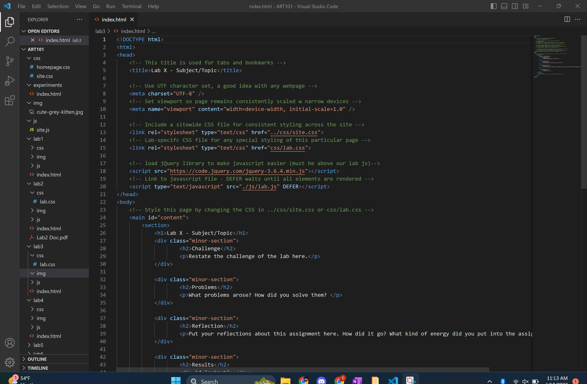
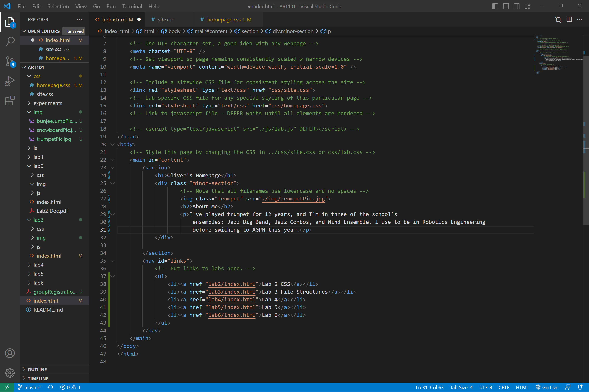
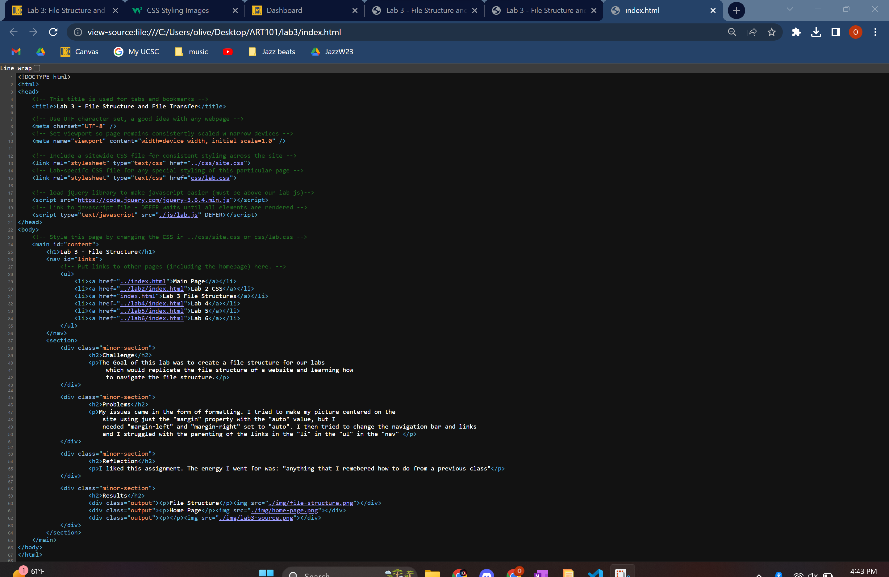

Lab 3 - File Structure
Challenge
The Goal of this lab was to create a file structure for our labs which would replicate the file structure of a website and learning how to navigate the file structure.
Problems
My issues came in the form of formatting. I tried to make my picture centered on the site using just the "margin" property with the "auto" value, but I needed "margin-left" and "margin-right" set to "auto". I then tried to change the navigation bar and links and I struggled with the parenting of the links in the "li" in the "ul" in the "nav"
Reflection
I liked this assignment. The energy I went for was: "anything that I remebered how to do from a previous class"
Results
File Structure
Home Page
Lab 3 Source
